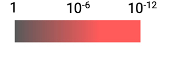

COVID-19 test results are usually reported simply as “positive” or “negative.” However, the amount of virus a person produces—the viral load—can vary. We estimated viral load for over 40,000 patients who had a positive PCR test at our hospital from 2020-2023 so you can see how viral loads vary—or don't—across age, sex, and so on.
Each entry in this triangle plot shows the p-value for the difference in viral load between the indicated groups. (The statistical test is the Mann-Whitney U test.) Brighter entries indicate greater differences.
Antigen tests can be self-administered and used at home but are less sensitive than PCR tests. For the antigen tests in the pulldown menu below, the antigen test and a PCR test have been run at the same time on the same people. This real-world data can predict how well these antigen tests will perform on different groups without having to run time-consuming and expensive trials on each group selected above.
When paired trials that directly compare an antigen test to PCR have not been performed, we can still predict how sensitive an antigen test is for detecting contagiousness by using the antigen test’s limit of detection (LOD). If the antigen test you’re looking for does not appear in the dropdown, set the LOD to see how sensitive your antigen test is.